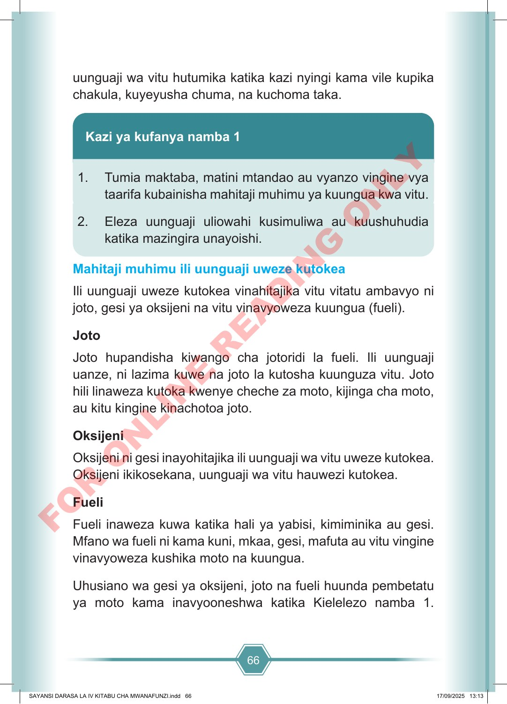

66 uunguaji wa vitu hutumika katika kazi nyingi kama vile kupika chakula, kuyeyusha chuma, na kuchoma taka. Kazi ya kufanya namba 1 1. Tumia maktaba, matini mtandao au vyanzo vingine vya taarifa kubainisha mahitaji muhimu ya kuungua kwa vitu. 2. Eleza uunguaji uliowahi kusimuliwa au kuushuhudia katika mazingira unayoishi. Mahitaji muhimu ili uunguaji uweze kutokea Ili uunguaji uweze kutokea vinahitajika vitu vitatu ambavyo ni joto, gesi ya oksijeni na vitu vinavyoweza kuungua (fueli). Joto Joto hupandisha kiwango cha jotoridi la fueli. Ili uunguaji uanze, ni lazima kuwe na joto la kutosha kuunguza vitu. Joto hili linaweza kutoka kwenye cheche za moto, kijinga cha moto, au kitu kingine kinachotoa joto. Oksijeni Oksijeni ni gesi inayohitajika ili uunguaji wa vitu uweze kutokea. Oksijeni ikikosekana, uunguaji wa vitu hauwezi kutokea. Fueli Fueli inaweza kuwa katika hali ya yabisi, kimiminika au gesi. Mfano wa fueli ni kama kuni, mkaa, gesi, mafuta au vitu vingine vinavyoweza kushika moto na kuungua. Uhusiano wa gesi ya oksijeni, joto na fueli huunda pembetatu ya moto kama inavyooneshwa katika Kielelezo namba 1. SAYANSI DARASA LA IV KITABU CHA MWANAFUNZI.indd 66 SAYANSI DARASA LA IV KITABU CHA MWANAFUNZI.indd 66 17/09/2025 13:13 17/09/2025 13:13 F O R O N L I N E R E A D I N G O N L Y